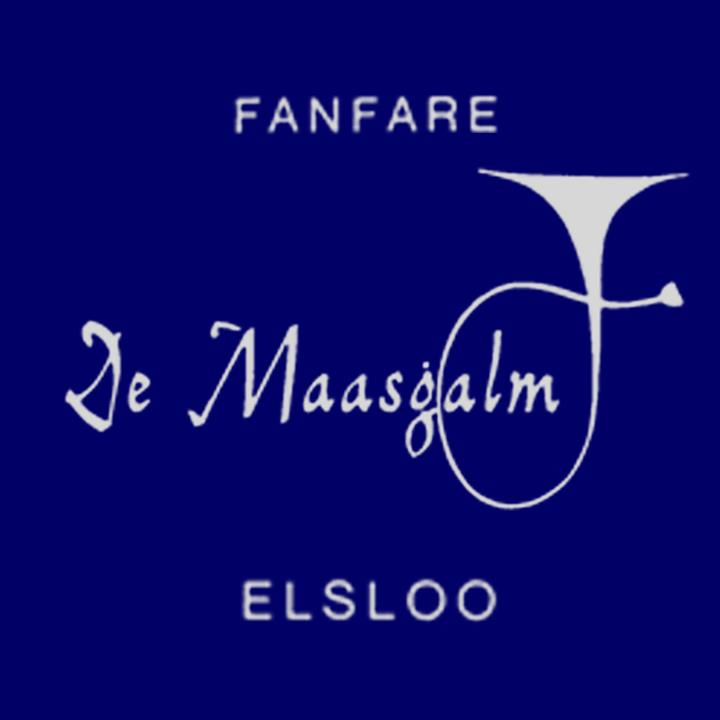

Na de zomer organiseren de fanfares van Stein én Elsloo het Nieuw Talent Orkest, een superleuk muziekproject voor volwassenen. In tien repetities laten beide verenigingen je ervaren hoe fantastisch het is om samen muziek te maken.
De aftrap, op zaterdag 8 oktober in Stein en op zondag 9 oktober in Elsloo, belooft een bijzonder gebeuren te worden onder enthousiaste muzikale leiding van Guus Pieksma uit Sneek, Friesland. Hij is initiatiefnemer van dit succesvolle concept. Meer dan 1000 Nieuw Talent Orkest muzikanten gingen je voor en ontdekten een geweldige nieuwe hobby!
Om mee te kunnen doen hoef je geen muzikale ervaring te hebben of noten te kunnen lezen. Maar je oude hobby opnieuw leven inblazen mag natuurlijk ook. Leeftijd speelt geen rol.
De repetities duren twee uur en die vliegen voorbij! Natuurlijk is er een pauze en heel belangrijk: het plezier staat voorop. We sluiten de periode na tien repetities af met een daverend slotconcert. Dan volgt een keuzemoment: stoppen of doorgaan.
Alles wat je moet weten:
| Stein | Elsloo | |
|---|---|---|
| Startdatum/tijd | Zaterdag 8 oktober - 20:00 uur | Zondag 9 oktober - 10:30 uur |
| Repetitie (10x - m.u.v. herfstvakantie) | Elke week op zaterdag 10:30 - 12:30 uur | Elke week op zondag 10:30 - 12:30 uur |
| Locatie | MFC de Grous te Stein | Maaslandcentrum te Elsloo |
| Slotconcert | In het weekend van 17/18 december | In het weekend van 10/11 december |
| Kosten | €125,- (instrument, lessenaar en lesmap inbegrepen) |
Doe jij mee?
Dan zorgen wij voor een lessenaar, een instrument en een complete lesmap. Misschien weet je al welk instrument je wilt bespelen en anders helpen wij je op weg!.
Vul onderstaand formulier in, dan nemen we contact met je op.
Heb je toch nog specifieke vragen? Neem dan contact op met Falco Cremers (Société St. Martin Fanfare de Stein) via 06 – 51 92 17 07 of met Barbara Mehlkop (Fanfare de Maasgalm Elsloo) via barbara.mehlkop@maasgalm.nl.
Copyright © 2022 Nieuwtalentsteinelsloo.nl - Created by Define-Function